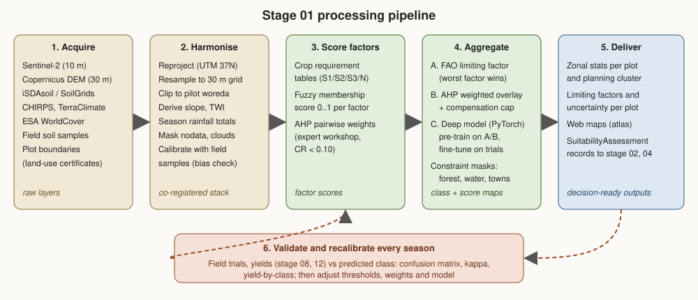
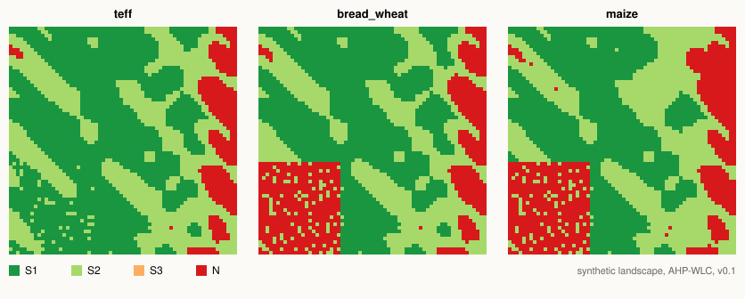

01. Land Intelligence & Suitability
Where can each crop grow, how well, and why not elsewhere? This is the root layer of the ecosystem: every production plan, water budget and buyer agreement downstream rests on it.
Position in the chain
Receives from
This stage
Turns soil, terrain, climate and land-cover data into plot-level suitability for each crop and season.
Why this stage matters
Think of a building survey before construction. An architect can design any house, but the ground decides where it can stand. Market demand (stage 05) says what to build; land suitability says where it can stand, and what reinforcement (lime, drainage, terraces) it needs first.
Right crop, right place
Avoid planting wheat on waterlogged Vertisols or maize above its altitude range, where yields are low whatever the effort.
Explain, not just classify
Every result names its limiting factors, so extension staff can say why and what would fix it (for example, liming acidic soils).
Honest uncertainty
Each assessment carries an uncertainty, so planners can tell a confident S1 from a borderline one that needs a field check.
Key questions
- Which plots are S1, S2, S3 or N for each candidate crop and season?
- Which factor limits each plot, and is the limitation fixable (pH, drainage) or permanent (slope, altitude)?
- How do smallholder plots group into planning clusters large enough for buyers?
- How confident is each result, and where is field sampling most valuable?
Domain model
The ubiquitous language of this stage. The SuitabilityAssessment is the contract other stages consume, so it always records the result, the reasons and the method version.

| Term | Kind | Meaning |
|---|---|---|
| Plot | Entity | A parcel a household holds use rights to. Identified by a pseudonymous holder ID; no personal data on this site. |
| PlanningCluster | Entity | Neighbouring plots planned together; the unit that production plans and buyers work with. |
| LandFactor | Value object | A measurable land quality, with unit and direction (optimum range, lower is better, higher is better). |
| FactorObservation | Value object | One factor value at one place, with source and uncertainty (std). |
| CropRequirement | Value object | For one crop and factor: S1, S2 and S3 bands, AHP weight and provenance note. |
| CropProfile | Aggregate | All requirements of one crop for one season (Meher, Belg or irrigated dry season). |
| SuitabilityAssessment | Value object (output) | Class, score, uncertainty, limiting factors, per-factor results, method and version. |
Methods
Based on the FAO land evaluation framework, combining expert rules with machine learning. Rules give transparency from day one; learning improves accuracy as field data accumulate.

FAO suitability classes
| Class | Meaning | Typical consequence |
|---|---|---|
| S1 | Highly suitable: no significant limitations | Priority land for the crop |
| S2 | Moderately suitable: limitations reduce yield or raise inputs | Suitable with management (e.g. fertilizer, timing) |
| S3 | Marginally suitable: severe limitations | Only with investment (lime, drainage) or if margins justify it |
| N | Not suitable | Excluded from the plan for this crop |
Three ways to combine factors
A. FAO limiting factor
Analogy: a chain is as strong as its weakest link. The land takes the class of its worst factor. Strict, simple and easy to explain to farmers, but one marginal factor drags everything down.
B. AHP weighted overlay
Analogy: a report card where some subjects count more. Factor scores (0 to 1) are averaged with weights set by experts through pairwise comparison (AHP). To stop averaging from hiding a serious problem, a weak factor caps the result one class above it, and any N factor makes the land N.
C. Deep learning (PyTorch)
Analogy: an apprentice who first learns from the textbook, then from the master farmer. A U-Net style model is pre-trained on rule-based labels, then fine-tuned on field trial yields. Monte Carlo dropout gives a confidence for every cell.
Indicative crop requirements (Meher season)
| Factor | Teff (S1) | Bread wheat (S1) | Maize (S1) | N beyond |
|---|---|---|---|---|
| Altitude (m) | 1700 to 2400 | 1900 to 2800 | 1500 to 2200 | crop specific |
| Growing-season rainfall (mm) | 450 to 1000 | 500 to 900 | 700 to 1200 | crop specific |
| Mean temperature (°C) | 16 to 24 | 12 to 22 | 18 to 28 | crop specific |
| Slope (%) | 0 to 8 | 0 to 8 | 0 to 8 | > 30 |
| Soil pH | 5.5 to 7.5 | 6.0 to 7.5 | 5.5 to 7.5 | < 4.5 to 5.0 |
| Drainage (1 very poor to 5 good) | 2 to 5 (tolerant) | 4 to 5 | 4 to 5 | < 1 to 2 |
| Soil depth (cm) | ≥ 50 | ≥ 75 | ≥ 75 | < 20 to 30 |
| Soil organic carbon (%) | ≥ 1.5 | ≥ 1.5 | ≥ 1.5 | < 0.4 |
Full S1, S2 and S3 bands and weights are in src/land_intel/factors.py. Belg-season and irrigated dry-season profiles, and further crops (malt barley, faba bean, chickpea, onion), are planned.
Amhara-specific considerations
Waterlogged Vertisols
Heavy black clay soils on flat land (common in parts of Gojjam and Gondar) waterlog in the main rains. Teff tolerates this better than wheat or maize; broad-bed and furrow drainage can upgrade the class.
Soil acidity in high-rainfall areas
Wetter western highlands (for example, parts of Awi and West Gojjam) often have acidic soils (pH below 5.5). This is a fixable limitation: liming can move land from S3 to S2 or S1, so the output flags it separately.
Steep slopes and erosion
Escarpments and hillsides limit cropping. Slope is a permanent limitation; terraces and soil bunds reduce erosion but rarely make steep land S1 for cereals.
Altitude and frost
Above about 2800 to 3000 m, frost risk and short seasons restrict crops to barley and some wheat varieties. Climate inputs come from stage 03.
Small, fragmented holdings
Households often farm several small plots. Results are computed on a 30 m grid, then aggregated per plot and per planning cluster, which is the level buyers and planners need.
Land-use rights, not land purchase
Rural land is held under use-right certificates. "Land availability" here means organising willing households into clusters, not acquiring land.
Data sources
| Layer | Source | Resolution | Used for | Access |
|---|---|---|---|---|
| Multispectral imagery | Sentinel-2 L2A (Copernicus) | 10 to 20 m | Land cover, cropland mask, vegetation indices | Open |
| Elevation | Copernicus DEM GLO-30 | 30 m | Altitude, slope, aspect, wetness index | Open |
| Soil properties | iSDAsoil (Africa), SoilGrids (ISRIC) | 30 m, 250 m | pH, organic carbon, texture, depth | Open |
| National soil fertility | Ethiopian Soil Information System (EthioSIS) | varies | Calibration of soil layers | By agreement |
| Rainfall | CHIRPS v2 | ~5 km | Season rainfall totals and variability | Open |
| Temperature | TerraClimate, ERA5-Land | ~4 to 9 km | Growing-season temperature (downscaled with DEM) | Open |
| Land cover | ESA WorldCover | 10 m | Constraint masks: forest, water, built-up | Open |
| Field soil samples | Pilot sampling campaign | points | Bias correction and validation | Project |
| Plot boundaries | Woreda land administration, GPS mapping (stage 07) | polygons | Per-plot aggregation | Restricted, pseudonymised |
Demo on a synthetic landscape
The scoring engine run on a made-up 16 km highland landscape (plateau and escarpment in the east, a poorly drained Vertisol valley in the south-west). No real field data. It shows how the methods behave, not where to plant.

| Crop | Method | S1 | S2 | S3 | N |
|---|---|---|---|---|---|
| Teff | FAO limiting | 7.0% | 47.8% | 35.3% | 9.9% |
| AHP weighted | 54.8% | 35.3% | 0.0% | 9.9% | |
| Bread wheat | FAO limiting | 5.4% | 39.6% | 32.8% | 22.2% |
| AHP weighted | 45.0% | 32.8% | 0.0% | 22.2% | |
| Maize | FAO limiting | 1.8% | 38.2% | 36.1% | 24.0% |
| AHP weighted | 40.0% | 36.1% | 0.0% | 24.0% |
Try it: how suitable is my plot?
Describe one plot and compare the three Meher crops with the indicative bands. Each factor gets a score from 1 (optimum) to 0 (not suitable); the FAO method takes the worst factor, the weighted method averages them with the AHP weights and caps the result one class above the worst factor. Same rules as score_factor() and assess_grid() in src/land_intel/scoring.py.
Indicative bands, to be calibrated with regional trials. Not advice for a real field.
Outputs and the contract with other stages
Suitability maps
Class and score rasters per crop and season, with limiting-factor and uncertainty layers, for the web atlas.
Plot and cluster records
One SuitabilityAssessment per plot, crop and season, aggregated to planning clusters for stage 04.
Investment signals
Areas where a fixable limitation (acidity, drainage, water) blocks otherwise good land, for stages 02 and 06.
Example record sent to stage 04 (synthetic):
{
"target_id": "PLOT-DEMO-001",
"crop": "bread_wheat",
"season": "meher",
"class": "S2",
"score": 0.88,
"uncertainty": 0.12,
"limiting_factors": ["soil_ph"],
"factor_results": [
{"factor": "soil_ph", "value": 5.3, "class": "S3", "score": 0.53},
{"factor": "slope_pct", "value": 11, "class": "S2", "score": 0.85}
],
"method": "ahp_weighted_linear",
"method_version": "0.1.0"
}Validation, uncertainty and indicators
How results are checked
- Field soil samples on a stratified random design, held out from calibration
- Confusion matrix and Cohen's kappa against field-verified classes
- Yield by predicted class from trials and stage 08 forecasts: S1 should out-yield S2, S2 should out-yield S3
- Monte Carlo propagation of input uncertainty to every plot score
Indicators (KPIs)
- Share of pilot plots mapped and assessed (target 100%)
- Agreement with field-verified classes (kappa, target ≥ 0.6)
- Yield gap between S1 and S3 plots (should be clear and consistent)
- Share of plots with high uncertainty that received a field check
Roadmap
Methodology v0.1
- Domain model and scoring engine
- Indicative profiles: teff, wheat, maize
- Synthetic demo and tests
- Status: done
Pilot data
- Select pilot woreda (zone screening)
- Build the open-data stack in Google Earth Engine / Python
- Soil sampling campaign
- Map pilot plots and clusters
Calibrate
- Expert AHP workshop with regional researchers and extension staff
- Calibrate thresholds with local trials
- Add Belg and irrigated dry-season profiles
Learn and publish
- Train and fine-tune the deep model
- Validate against the first season's yields
- Publish the suitability atlas and API for stage 04
Code on this branch
src/land_intel/domain.py domain model (entities, value objects, enums)
src/land_intel/factors.py factor catalogue and indicative crop profiles
src/land_intel/scoring.py factor scoring, AHP weights, FAO and weighted aggregation, uncertainty
src/land_intel/model.py PyTorch multi-crop suitability network, loss, MC-dropout inference
src/demo.py end-to-end demo on synthetic data (writes assets/demo-class-map.svg)
tests/test_scoring.py unit tests for the scoring engine
docs/methodology.html method details and interactive AHP calculatorgit switch stage/01-land-intelligence
python3 src/demo.py
python3 tests/test_scoring.py